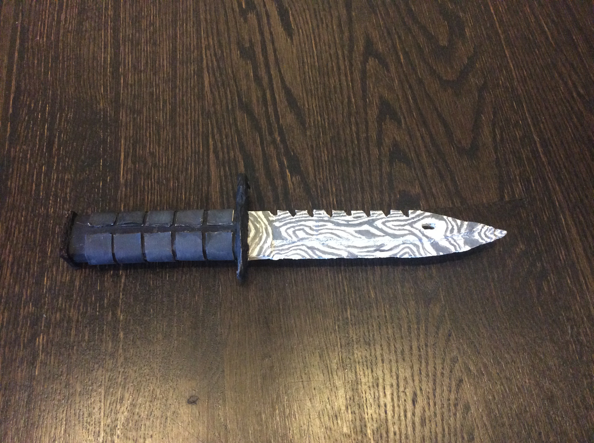

|PHYS S-12| Week 3
Day 5: Learning About Programming Electronics with Arduino
Today, we learned more about programming with the Arduino program, along with incorporating LED lights and buttons in our circuits. Specifically, we learned about conditional statements and nested conditional statements. These statements allowed the code to run under different conditions or situations. Nested conditional statements, such as millis(), for example, relayed back to us the number of milliseconds since the program had begun.
 code pic.png)
We also were introduced to loops, which would allow us to create fades in the LED lighting.

Assignment: Program a microcontroller to produce an output using at least one button for input. Use conditional statements and loops. Follow one of the tutorials and create a 3D model. Keep thinking about the final project and what kinds of components will be needed.
I followed the Fusion tutorial where the guide brought us through steps on how to create a lampshade cover.

Day 6: 3D Design and Printing
Assignment: Design and print a small object with PrusaSlicer. Scan something using a photogrammetry application.
Photogrammetry
I wanted to use this photogrammetry app called "Cubicircle" to scan this cardboard knife "M9 Bayonet" I made two years ago. Unfortunately, I'm pretty sure most of the apps in the App Store won't work on my dying iPhone 6. Below is a photo showing the model I was trying to capture. I will try to switch to the Qlone to capture the model.
